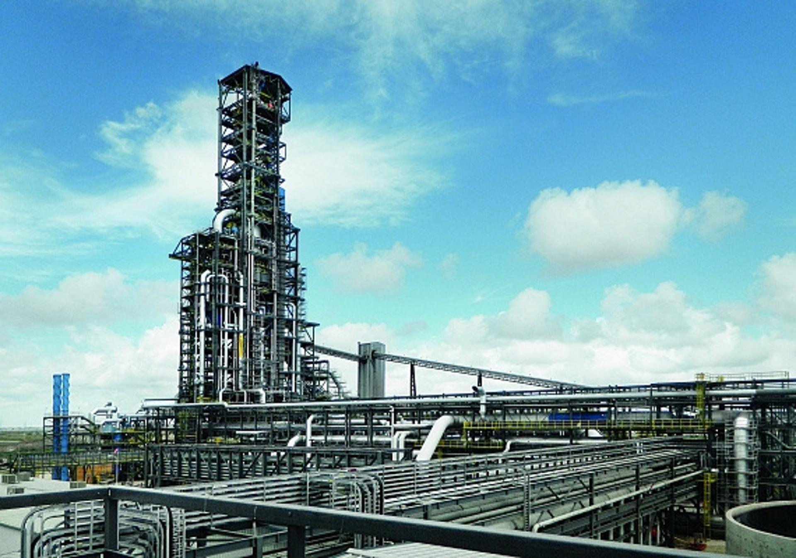
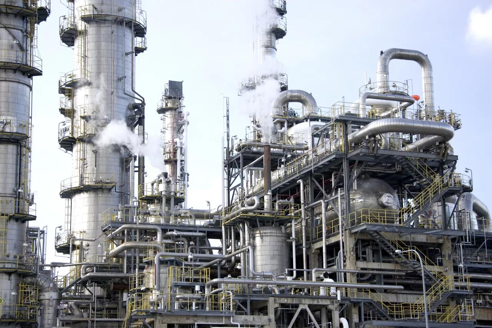
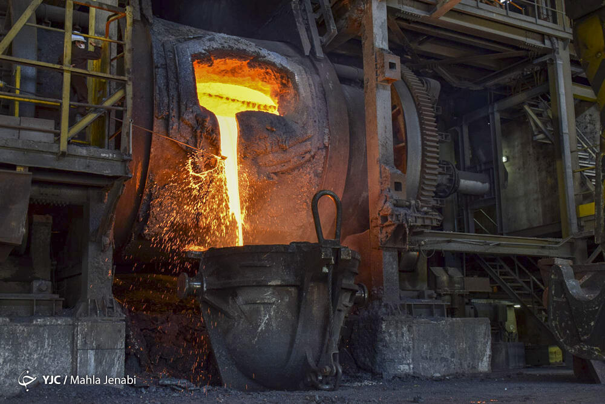

APPLICATION PORTFOLIO · HAPAG-LLOYD
Working Student · Project & Transformation Management
Keeping people,
processes and
projects aligned.
I bring practical experience coordinating complex industrial projects—and a current focus on digital workflows, AI and project management.
Available 1 January 2027 · 12 months · Open to Hamburg

ALI SOLEIMANIMA International Management
Project Management focus · Cologne
01 / COORDINATE02 / IMPROVE03 / DOCUMENT
10 yearsProcurement & project coordination
8 projectsEPC & industrial delivery
30+ suppliersAcross Europe & Asia
1.2 GPACurrent MA grade · Fresenius
01 / MY CONTRIBUTION
Experience that connects
to your transformation team.
The role combines coordination, better ways of working and clear information. These are the areas where I can contribute from day one.
01PROJECT COORDINATION
Follow through on the details.
Across eight industrial projects, I coordinated engineering teams, suppliers, contractors and client contacts, tracked milestones and open issues, and escalated matters requiring management input.
Petro Sanat Lidoma · 2017–2026Action trackingStakeholder follow-upCross-functional work
02PROCESS IMPROVEMENT
Make the way of working clearer.
I improved procurement workflows and digital documentation, with an estimated 30% improvement in process efficiency. My current academic–industry project extends this interest into AI-enabled workflows and digital process integration.
Industrial practice + current digital projectWorkflow designDigital documentationStructured testing
03REPORTING & COMMUNICATION
Help people act on information.
I prepared management reports and project correspondence for commercial and operational decisions. As a Strategic Sourcing lecturer, I also explain practical decisions and complex trade-offs to MSc students.
Advanced Excel · PowerPoint · MS Project · VisioManagement reportingClear communicationProject documentation
02 / SELECTED WORK
From industrial delivery
to digital workflows.
A closer look at the projects behind the experience. Open each project for the scope of my contribution.
CURRENT PROJECT / 2026Map the
workflow↓Plan & run
structured tests↓Evaluate
reliability
AI-enabled tools · Digital process integration HOCHSCHULE FRESENIUS × KUKUK INGENIEURE
Digital Workflow &
AI Integration
Project Coordinator · Cologne
September–December 2026 · Ongoing
An academic–industry project evaluating AI-enabled workflows and digital process integration.
Explore my contribution +
- Support workflow design, test planning and evaluation of AI-based tools.
- Maintain project documentation and track deliverables with academic and industry stakeholders.
- Assess workflow reliability and compliance requirements through structured tests.

JUN 2021–MAR 2023 · PETRO SANAT LIDOMA
DRI Iron Plant
800,000 tonnes per year plant capacity
Delivery coordination +
Coordinated international procurement, control-panel delivery, inspection and shipping documentation with suppliers, engineering teams and the client.

JAN 2020–MAR 2022 · PETRO SANAT LIDOMA
C2+ Recovery & Fractionation
Two sites · European OEM collaboration
Managing project interfaces +
Coordinated procurement and engineering follow-up across two sites, including changing documentation and control-system completion with a European OEM.

JUN 2019–JUN 2020 · PETRO SANAT LIDOMA
Copper Smelter Expansion
Expansion targeting 50% additional capacity
Time-critical collaboration +
Coordinated procurement, contractors and engineering interfaces during a time-critical shutdown. The 50% figure describes the project's target capacity increase.
03 / BACKGROUND
Practical experience.
A fresh academic lens.
I am now studying project management in Germany while contributing to digital workflow work, teaching and an international operations team.
Explore my full professional profile ↗2026–2028MA International Management
Hochschule Fresenius · Project Management focus
Current GPA 1.2 · Expected February 2028
Nominated for the Ludwig Fresenius Talent Network
OCT 2026–PRESENTLecturer in Strategic Sourcing
Hochschule Fresenius · MSc E-Commerce & Logistics
Industrial cases, supplier evaluation and sourcing decisions.
APR 2026–PRESENTWorking Student in Operations
Flink Expansion 28 GmbH · Cologne
Daily operations and logistics in a multicultural team.
2016–2026Procurement & Executive Coordination
Petro Sanat Lidoma · Tehran
Procurement Specialist, then Procurement Manager & Executive Coordinator.
ENGINEERING FOUNDATIONMSc & BSc Chemical Engineering
Iran University of Science and Technology
MSc 2015–2018 · BSc 2011–2015